Web Interface
The Predbat Web Interface provides an easy to use way to see and change different aspects of your Predbat system including viewing the current plan, adjusting the configuration, viewing the charts, checking your apps.yaml and viewing the logfiles.
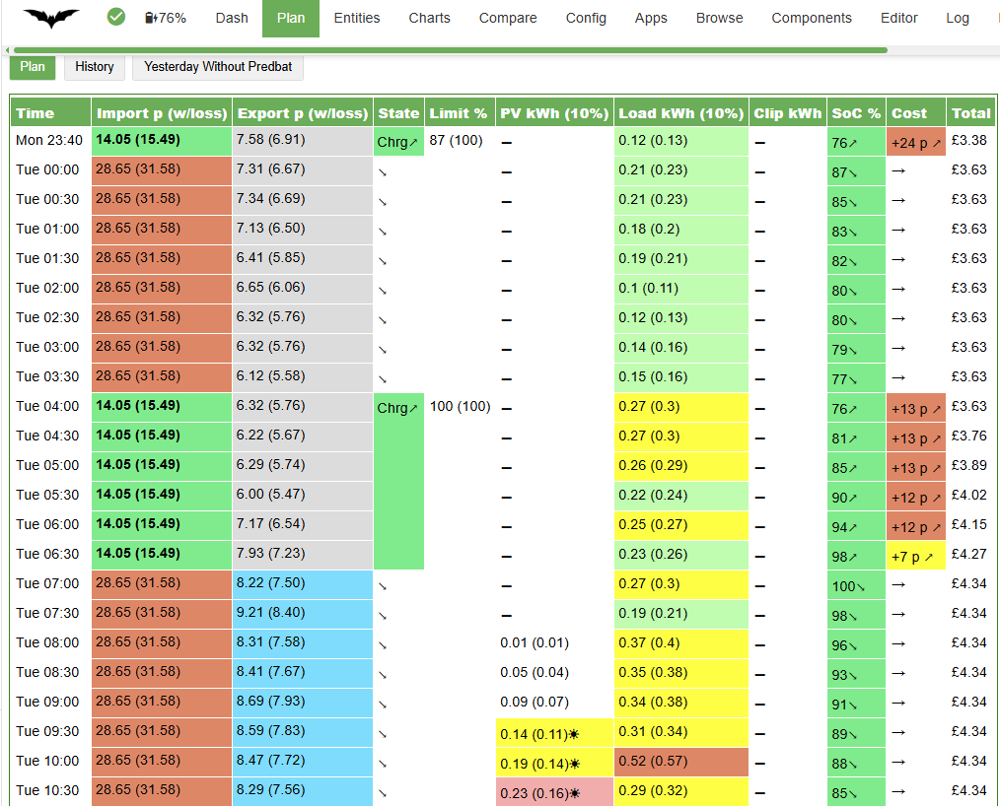
Accessing the Web Interface
If you are running the Predbat app then the Predbat Web Interface can be accessed by clicking 'Open Web UI' on the app screen (arrowed):
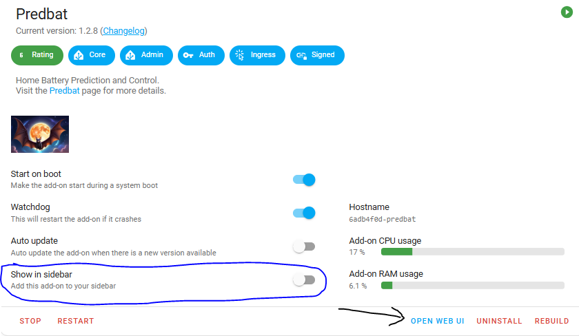
You can also turn on the 'Show in sidebar' option (circled) to have direct access to the web interface from the Home Assistant side bar.
Another option is to include a link on your dashboard using an entities card:
- type: entities
entities:
- type: weblink
name: Predbat web interface
url: /hassio/ingress/6adb4f0d_predbat
icon: mdi:bat
If you are not using the Predbat app then you may be able to access the Web Interface directly on port 5052 (e.g. with a Docker Container or native on your Linux/MAC). The port number can be changed by setting web_port in apps.yaml.
Note: The Predbat web interface will not work with the AppDaemon or the Predbat-appdaemon installation methods.
Web Interface Views
A number of different views of Predbat are available and you can change your view using the top menu bar.
Dash View
The initial view is the Dash view which gives a summary of Predbat's status and mode, some easy-to-access debug options (see below), a power flow diagram showing power flowing in and out of your home, a text summary of Predbat's plan, and then all the output entities that Predbat creates.
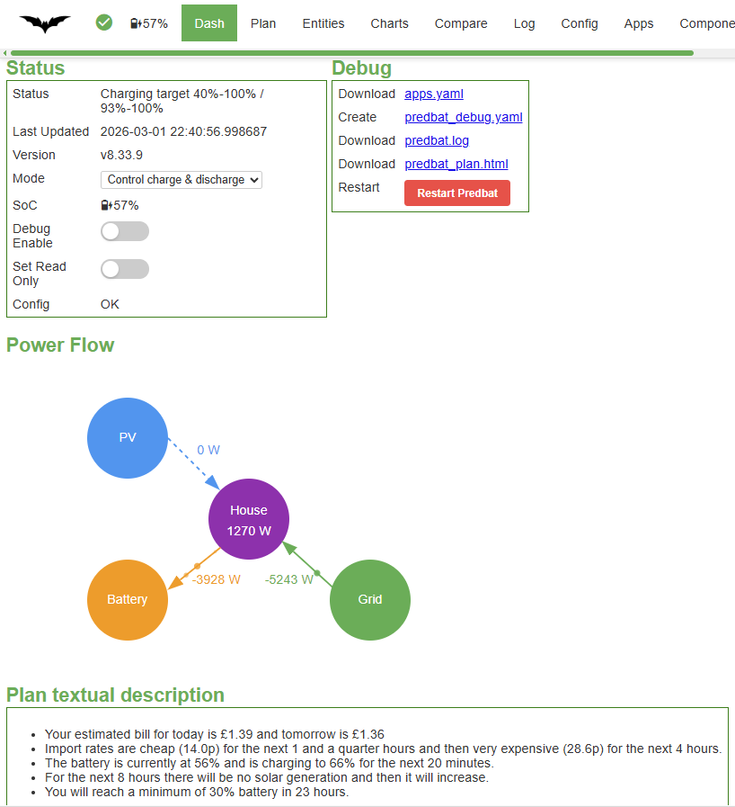
The power flow diagram shows the PV, battery, grid and house, with animated arrows whose speed reflects how much power is flowing.
A car is also shown if you have set car_charging_power in apps.yaml (this is automatic for the supported charger integrations).
If switch.predbat_car_energy_reported_load is on (the default) then your charger sits inside the house CT clamp, so the car is drawn as being fed from the House
and its power is subtracted from the House figure, which then shows the rest of your household load rather than counting the car twice.
If the switch is off then the charger is outside the clamp and its power was never in your house load reading, so the car is drawn as being fed from the Grid and the House figure is shown as it is read.
The Debug panel provides easy access to a number of files that are useful in diagnosing a problem and are usually required if you raise a Predbat GitHub issue:
- Download apps.yaml - provides a link to download your apps.yaml file. This is useful to identify issues with your Predbat configuration
- Create predbat_debug.yaml - turns Predbat's debug mode on and creates a Predbat debug file which contains your entire Predbat Home Assistant configuration;
all the input settings for Predbat and all Predbat's output data including the current HTML plan, the best_* entities, etc.
This debug file enables your setup to be recreated to identify any configuration issues it may have or Predbat bugs to be re-created. Confidential information such as your Solcast API or GECloud API are redacted in the debug file. - Download predbat.log - provides a link to download the current Predbat logfile which contains progress and any error messages that occur whilst Predbat is running
- Download predbat_plan.html - provides a link to download the current Predbat HTML plan
- History - a link to download every retained automatically-captured debug history snapshot as a single gzip tarball (
predbat_debug_history.tgz.dmp- open withtar xzf predbat_debug_history.tgz.dmp; the.dmpkeeps browsers from unpacking it on download, which would push it past GitHub's attachment limit), the same aspredbat_debug.yamlabove but covering a window of earlier points in time, without needing debug mode to have already been turned on. Individual snapshots for a specific plan time slot can also be downloaded from the Debug column on the plan's History view.
Note that GitHub does not accept .yaml file attachments. The debug file download arrives already named predbat_debug.yaml.txt, so it can be attached to an issue as-is, but a downloaded apps.yaml still needs renaming, e.g. to apps.txt, before GitHub will take it.
Underneath the Debug panel is the Power Flow diagram. The Power Flow gives an 'instantaneous Power' snapshot of your PV generation, Battery charge/discharge, Grid import/export and House consumption using the power_xx entities defined in apps.yaml.
Note these are a snapshot view of what is happening right now on your inverter and are not the same as the
'Energy Today' sensors in apps.yaml (load_today, import_today, export_today and pv_today) which give accumulated energy so far today and for the days_previous days history.
Beneath that is the plan textual description panel which gives a brief summary of current battery level, forthcoming import rates, solar generation, planned charging, discharging and export activity.
At the bottom of the view is the Predbat Entities panel which details all the other Predbat output entities, their current state and attributes. Any entity name can be clicked to swap to the Entities view for that entity.
Plan View
This view provides an easy way to see what Predbat is planning for your battery/inverter. It displays the current Predbat plan in (by default) 30 minute segments showing import and export rates, Predbat's planned state for the battery (charging, discharging, etc), predicted solar generation, predicted house load, car charging, cost, etc.
Buttons enable you to easily swap between 'Plan' which shows the current Predbat Plan from now going forwards, a 'History' view of the plan from Midnight yesterday up to now, and 'Yesterday without Predbat' which is a simulated plan without any Predbat battery optimisation and an assumed number of charging periods. The starting battery SoC for this simulation is carried forward from the end of the previous day's 'Without Predbat' simulation (not the actual midnight SoC), so that the simulated 'without Predbat' universe remains self-consistent — i.e. if Predbat had not been running, the battery may have had a different SoC at midnight than it actually did. This means the starting SoC shown in the 'Yesterday without Predbat' view can differ significantly from the 'History' view, which reflects what actually happened.
The 'History' view also shows a Debug column with a download link on any time slot that has an automatically-captured debug history snapshot from around that time - useful for grabbing the real Predbat state from the moment something looked wrong, without needing to have had debug mode switched on in advance.
You can easily change Predbat's planned activity for a slot by clicking on the slot time, then selecting Manual Demand, Manual Charge, Manual Export, Manual Freeze Charge or Manual Freeze Export to set the activity. If you have previously changed Predbat's planned activity for a slot, choose Clear to return Predbat to its planned activity.
Further details of the columns, what they show, the colour coding, etc can be found in the Predbat plan card documentation.
You can also create a Predbat Plan card to show Predbat's plan on your own custom dashboard.
Entities View
This view enables you to look at the history of any predbat output entity or (input) configuration setting.
Select the entity required to be viewed, the attributes to be charted (defaults to entity state) and the time period of history to view the entity over (but note you may need to increase HA's purge_keep_days first).
You can select multiple entities and their attributes and Predbat will then display the current entity values, a chart of the selected attribute history, and then a list of prior historical values. The example below shows predbat import and export rates charted for the last 7 days:
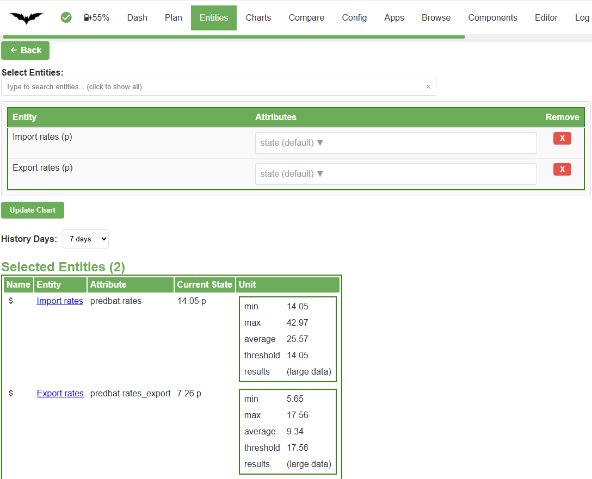
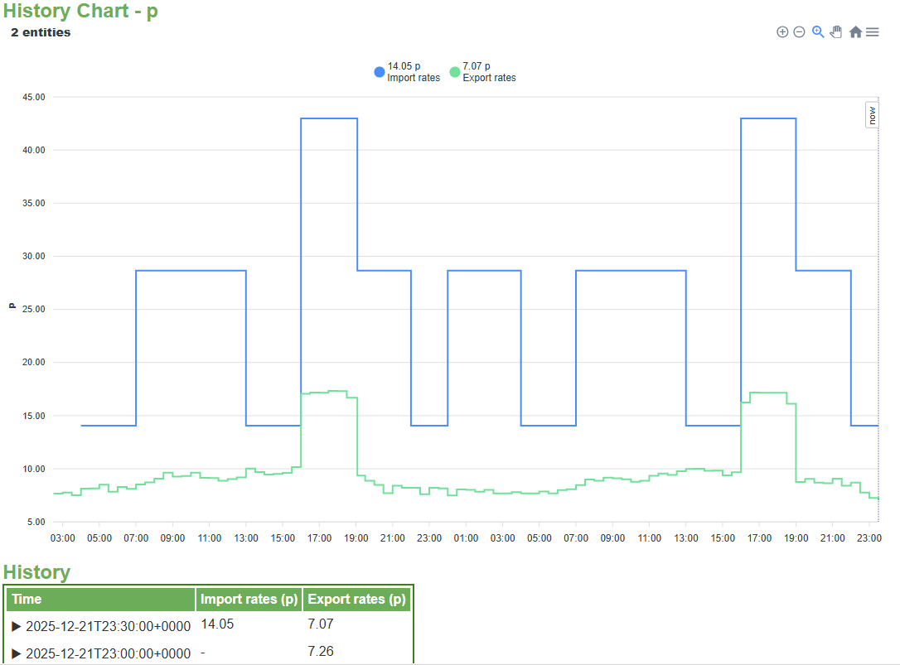
Charts View
The Charts view provides an easy way of viewing a number of pre-created Predbat charts:
- Battery - Shows the historic Battery SoC for today and the predicted SoC for the plan duration under the Base/Base10/Best and Best10 scenarios (see explanation of these terms. The chart also shows where charging is planned under the Base and Best scenarios and forced Export under the Best scenario
- Power - Shows predicted Power for the plan duration. This includes battery charge and discharge, solar generation (PV), house load, iBoost load, car charging load, and grid import/export
- Cost - Shows the historic import, export and net total cost incurred for today and the predicted cost for the plan duration under the Base/Base10/Best and Best10 scenarios
- Rates - Shows historic and future import and export rates along with historic hourly and today pence per kWh so you can see where you have earned or spent the most on electricity during today
- InDay - Shows Predbat's predicted house load for today, the actual house load that has occurred so far today, and then Predbat's adjusted house load prediction based on the variance of today's actual load to predicted load
- PV - Shows today's predicted solar generation under the PV, PV10 and PV90 scenarios alongside today's actual solar generation
- PV7 - Similar to the PV chart, but shows actual solar generation and forecast for the last 7 days including today
- Load ML - Shows the correlation between your actual house load and the Load ML predictions, charting current prediction, the 1 hour in the future prediction, and the 8 hours future prediction
- LoadMLPower - Similar to the Load ML chart, but also plots actual PV production, predicted PV production and temperature predictions.
- MarginalCosts - Shows the marginal cost of consuming extra electricity at different load levels (1, 2, 4, 8 kWh) across upcoming time windows.
The page contains three sections:
- A status table showing whether the current marginal rate for each load level is cheap or moderate based on today's import rate range
- A compact Grid Rates heatmap showing the actual import and export rate at each time window
- A full Marginal Energy Cost heatmap matrix coloured green (cheap) to red (expensive) on a shared scale
Example PV chart:
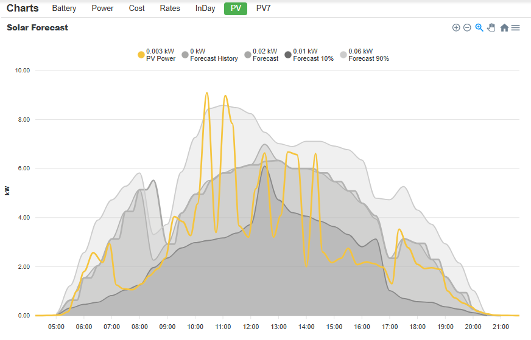
Compare View
The Compare View provides access to Predbat's Compare Energy Tariff feature which enables you compare what Predbat predicts it would cost you (or you'd gain from export) on different energy tariffs with your predicted load and solar generation.
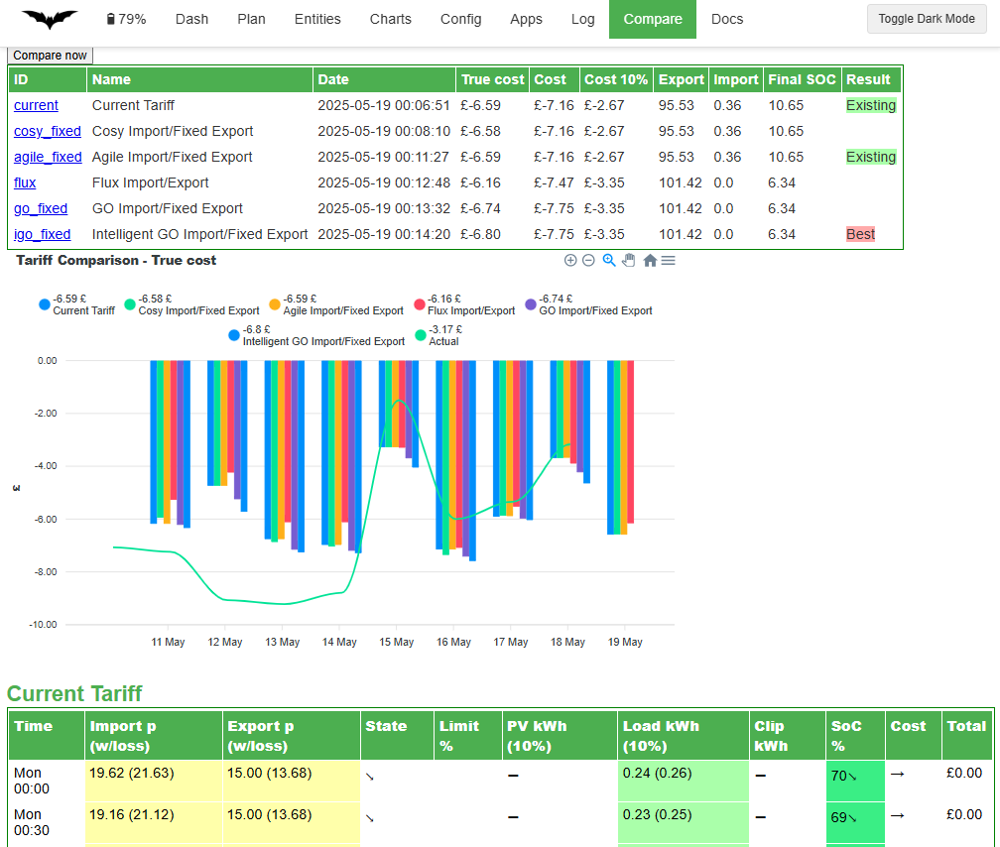
Chat View
The Chat tab gives you a conversational way to ask about your Predbat setup, backed by a large language model. That model can be a hosted one reached through OpenRouter, or one running on your own machine through Ollama or anything else with an OpenAI-compatible API. Until a provider is configured the tab is still there, showing a banner offering to open Settings rather than vanishing without explanation.
A banner across the top of the page is a standing reminder that tool results - including log
lines and configuration - are sent to whichever provider you have configured, and on to whoever
serves the model you choose; dismissing it persists in that browser (via localStorage) until its
site data is cleared, not just for the current session. Read the
chat component's security note before enabling the feature -
in particular, the web interface has no login of its own, so anyone who can reach it can use the
chat and read every saved conversation.
Finding your way around
Across the top of the page are a Settings button, a New chat button, and the title of the
conversation you are reading. Click the title to drop down the list of your saved conversations,
newest first, each showing when it was last updated and its running cost; click one to switch to
it, or the ✕ beside it to delete it. The pencil next to the title renames the conversation
you are in. Deleting hides a conversation immediately, but its stored copy is not removed - it
remains on disk until it ages out after chat_expiry_days of inactivity, the same as any
conversation you have not touched.
Only one reply runs at a time across the whole installation - not just per conversation - so the composer locks itself while a reply is in progress, whichever conversation it belongs to, and a banner names the conversation that is busy.
If the model wants to change a setting or override the plan, and
switch.predbat_chat_confirm_writes is on (the default), it does not run immediately: a
confirmation card appears in the transcript showing the tool name and the exact arguments it wants
to call it with, and the turn waits for you to Approve or Reject it. Turn the switch off
if you would rather the agent act without asking first.
Settings
Settings is where you tell Predbat which AI providers to use. Each one has a name of your
choosing, a type (openrouter, ollama, openai or local), the URL of its endpoint, an API
key where the provider needs one, and a default model. Choosing a type fills in the endpoint and a
sensible default model for you, so adding a local Ollama is usually just picking ollama and
saving.
Pointing this at Ollama on another machine needs two things doing first - Ollama has to be told to
listen on the network, and the URL has to name that machine rather than localhost. See
Reaching Ollama from Predbat.
Fetch models asks that endpoint what it serves and turns the model box into a searchable list, which works before the provider has been saved - so you can pick a real model while setting it up rather than saving blind and finding out afterwards. Only tool-capable models are offered: a model that cannot call tools cannot drive the agent at all, and would answer from its own guesswork rather than from your plan. If the endpoint cannot be reached the box stays free text and tells you why.
Save to apps.yaml writes the
lot into the chat: block of your apps.yaml and closes the dialog, putting you back on your
conversation. Predbat watches that file, so a few seconds later it restarts to pick the change up.
The Chat tab goes quiet for a moment and then reconnects on its own, and any reply that was in
progress is cut short; a note above the transcript says so, and your conversations are saved and
will still be there. Save stays greyed out until you actually change something, so
closing a dialog you only looked at cannot restart Predbat for nothing.
Switching between providers you have already set up is not done here - it is the dropdown next to the model box, described below. That writes nothing and restarts nothing.
Your API keys are never sent to this page - a provider shows only whether a key is set, and leaving the key box empty when you edit one keeps the key already in the file, so changing a URL cannot wipe your credentials. See AI Chat Agent for the file format if you would rather edit it by hand.
Below the providers are the agent's three permission toggles - Confirm writes, Web search
and HA state access. They are the same switches as switch.predbat_chat_confirm_writes,
switch.predbat_chat_web_search and switch.predbat_ai_ha_state_enable under
Config, not a per-tab copy of them: a change here takes effect everywhere, which
for HA state access includes the MCP server, and applies the moment you make it rather than
waiting for the Save button. See the
chat component's switch table for what each one allows.
Choosing a provider and a model
A dropdown at the bottom left names the provider that is answering - and so also names the
endpoint the model list beside it came from. With more than one provider configured you can
change it there, and it takes effect at once: nothing is written to apps.yaml and Predbat does
not restart, because every provider is already in the file and which one answers is only a
preference. Your choice is remembered across restarts. The model list is refetched when you
switch, since the models on offer belong to the endpoint rather than to Predbat.
A model search box beside it lets you choose a different model for that one
conversation. Each result shows its price and context window - the price is US dollars per
million tokens, input then output, so $2/$10 1000k means $2 per million tokens in, $10 per
million out, with a one-million-token context. Models that cost nothing show free, and
OpenRouter's routing models (openrouter/auto and similar) show varies, because what they cost
depends on which model they route your request to. Click it and type to filter - OpenRouter offers
several hundred tool-capable models, so it filters on both id and name rather than being a plain
dropdown. Your choice is remembered per provider as the starting point for new conversations and
survives a restart, so setting a provider's model in apps.yaml is optional; if you do set it,
it is what new conversations use until you pick something else.
Everything about the model is per provider, including a choice made inside one conversation. A model id only means anything to the endpoint serving it, so switching provider does not carry your OpenRouter model over to Ollama - it goes back to whatever you last chose on that provider, or to its default. If neither is available, the box says Pick a model to start rather than naming something the endpoint would reject. Switching back restores what you had. If the provider's catalogue cannot be fetched, only the configured model is offered.
Beside it, Predbat shows the token usage and cost of the turn that just completed, the conversation's context size against the selected model's limit, and the running total cost for the whole conversation - the costs come from the provider's own reported pricing for the model in use, where it publishes any.
Log View
Predbat writes detailed logging, status and progress activity information to a logfile as it runs and so the Log view provides an easy way to see and download the Predbat logfile.
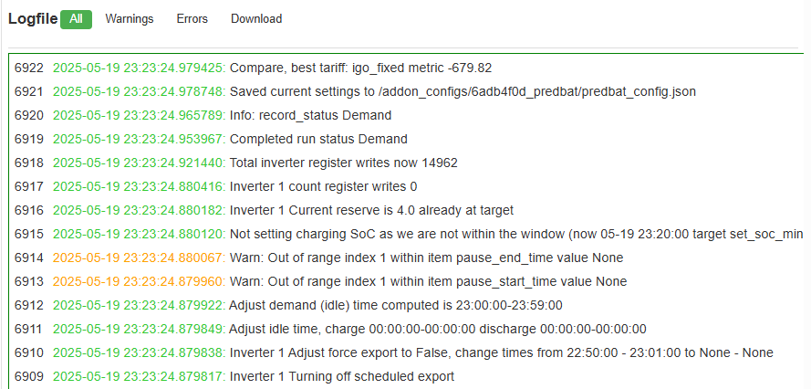
By default the Log view opens in the Warnings tab which shows a filtered list of Warnings and Errors in the Predbat logfile.
The Errors tab shows a filtered list of logfile Errors, the Info tab shows a filtered list of Info logfile entries, and the All tab shows all entries in the Predbat logfile.
Normal and info log messages are coloured Green, Warnings are Orange, and Errors in Red. The Logfile view shows newest entries at the top and auto-refreshes so as Predbat is executing the most recent logs will appear at the top and the log will scroll downwards.
The Download tab gives the ability to download the logfile.
Further details about the Predbat logfile and its location is described in the output data document.
Config View
The Config view provides a way to see and change all of Predbat's configuration entities in Home Assistant. For each entity is displayed the name, entity type, the current entity value and Predbat's default value for that entity.
Any entities that are coloured pale red simply denote entities where you have changed the value from Predbat's default value - it does not indicate that the entity value is in error, its just that its different from the default value.
Any entity name can be clicked to swap to the Entities view for that entity.
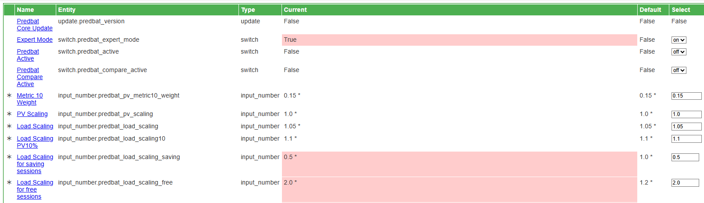
You can also create a custom dashboard to see and update Predbat's control entities; and full explanation of Predbat's control entities and what they do can be found in the customisation documentation.
Apps View
The Apps view allows you to look at your apps.yaml configuration and to modify the values within the web browser without having to edit the YAML file directly.
Click the edit button to change a value, when all the edits are complete hit save to save the apps.yaml and Predbat will automatically be restarted with the new configuration.
Alongside the edit button, each entry of a list and each setting within it can be removed with the Delete button, and new ones created with the
Add item and Add setting buttons at the end of each group. This is how you add, change or remove a tariff to compare without hand-editing
the YAML - Add item against compare_list asks for the new tariff as one setting: value per line, starting from a template of the required name and id.
Deletions and additions are only pending until you hit save, so they can be undone first with the Undo, Remove and Discard Changes buttons.
Predbat validates your apps.yaml every time it runs and if there are any configuration issues it displays a count of those errors and highlights the items in error in red:
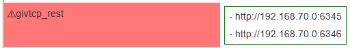
Further details of the apps.yaml error can be found in the Predbat Log.
Components View
The Components View enables you see the current status of the different Predbat Components and the key configuration settings being used by those components.
You can restart individual Predbat components if required.
Editor View
The editor view allows you to edit apps.yaml as text directly within the web interface. If you make a syntax error then the error will be highlighted and save
will be disabled pending a fix.
Browse View
The Browse view gives a simple file system browser to enable you to view any of the configuration, output and code files in the directory that Predbat is installed in.
You can navigate around subfolders and view files, but not make any changes using the Browse view.
Internals View
The Internals view gives a view of Predbat's internal operations.
It gives the hierarchy of threads, and their status; and the Predbat code object hierarchy.
These are intended for debugging and developer activities, in normal use you can ignore this view!
Metrics View
The Metrics view gives a dashboard of Predbat's internal metrics, including application health, plan status, battery state, energy totals, costs, savings and API status.
The System Health row includes a Data Age card, showing how many days of historical load data (load_today) Predbat was able to retrieve from Home Assistant, going back from now. This is a measure of how much history is available, not how stale the latest reading is - a higher number generally means better load forecasting, since day-of-week weighted forecasts (the days_previous setting) need enough history to match against. The card is only flagged as a warning when the retrieved depth falls short of what your days_previous configuration actually needs (shown in the "need Xd" sub-label) - for example, if days_previous includes 7, Predbat needs at least 7 days of history, and a shortfall usually means Home Assistant's recorder purged old data before Predbat could read it, or a load sensor is newly added.
Docs View
Provides a quick link to the Predbat documentation.
Toggle Dark Mode
As it says, toggles the Predbat web interface between light and dark mode.
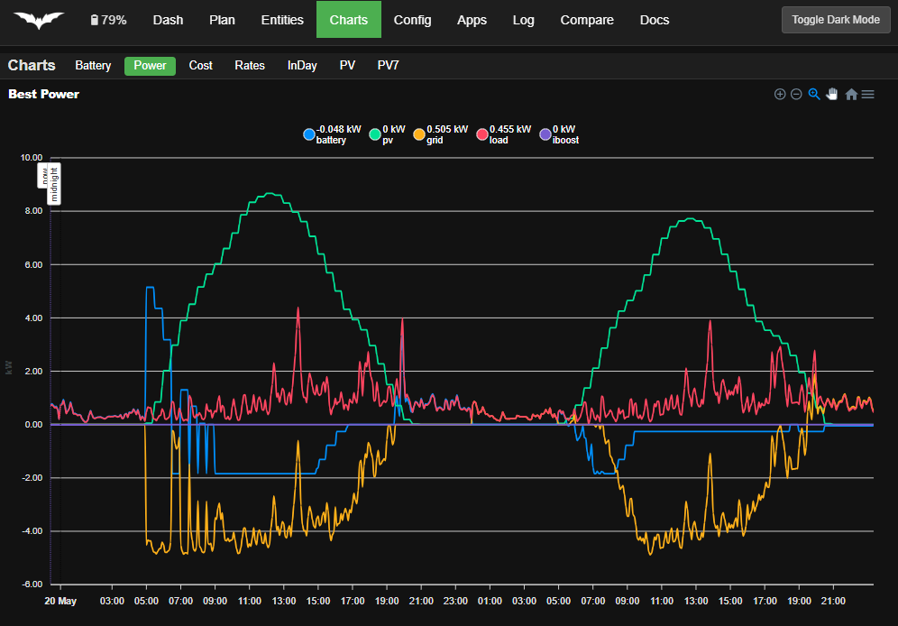